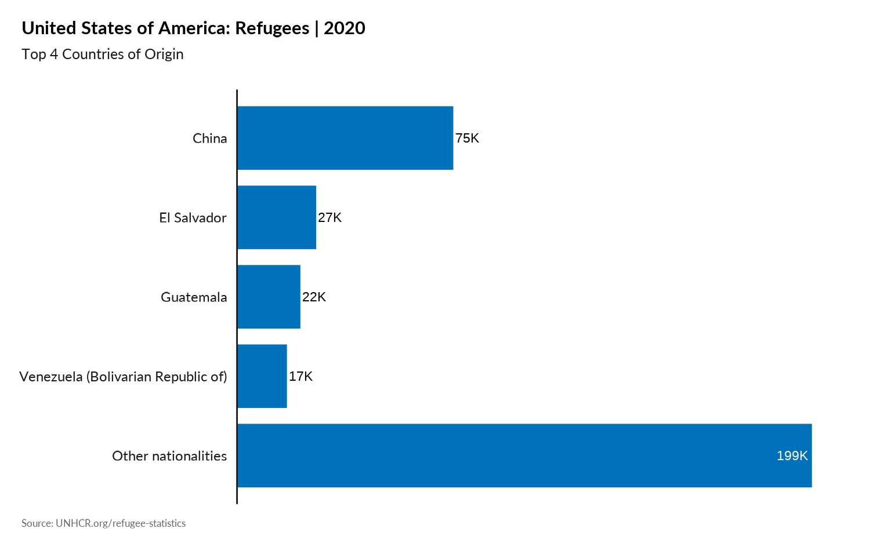
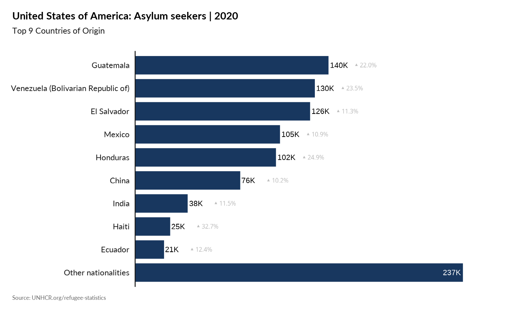
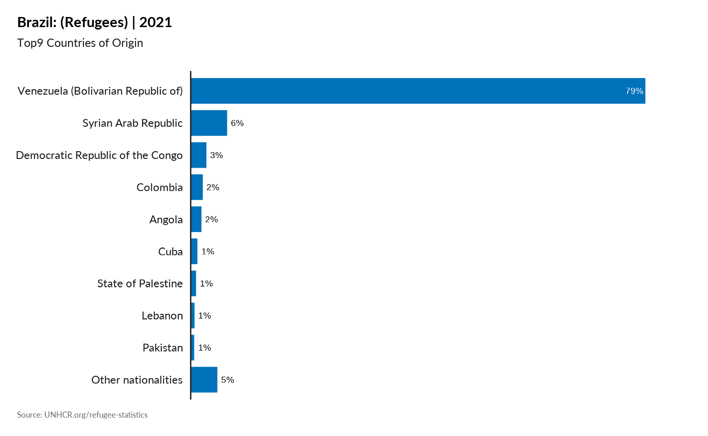
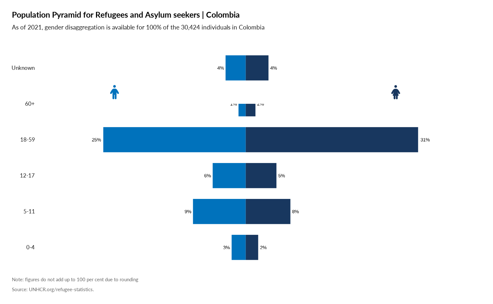

library(unhcrdatapackage)Country Questions
Plot Population type per year
plot_ctr_population_type_per_year(start_year = 2016,
country_asylum_iso3c = "PAN",
pop_type = c("REF",
"ASY",
"VDA",
"OOC",
"STA",
"IDP" )
)
#> Loading required package: ggplot2
#> Loading required package: tidyverse
#> ── [1mAttaching packages[22m ─────────────────────────────────────── tidyverse 1.3.1 ──
#> [32m✔[39m [34mtibble [39m 3.1.7 [32m✔[39m [34mdplyr [39m 1.0.9
#> [32m✔[39m [34mtidyr [39m 1.2.0 [32m✔[39m [34mstringr[39m 1.4.0
#> [32m✔[39m [34mreadr [39m 2.1.2 [32m✔[39m [34mforcats[39m 0.5.1
#> [32m✔[39m [34mpurrr [39m 0.3.4
#> ── [1mConflicts[22m ────────────────────────────────────────── tidyverse_conflicts() ──
#> [31m✖[39m [34mdplyr[39m::[32mfilter()[39m masks [34mstats[39m::filter()
#> [31m✖[39m [34mdplyr[39m::[32mlag()[39m masks [34mstats[39m::lag()
#> Loading required package: scales
#>
#> Attaching package: 'scales'
#> The following object is masked from 'package:purrr':
#>
#> discard
#> The following object is masked from 'package:readr':
#>
#> col_factor
Plot Main country of origin - Absolute value
plot_ctr_population_type_abs(year = 2020,
country_asylum_iso3c = "USA",
top_n_countries = 4,
pop_type = "REF"
) 
## Same with 9 top countries and asylum seekers included
plot_ctr_population_type_abs(year = 2020,
country_asylum_iso3c = "USA",
top_n_countries = 9,
pop_type = "REF"
) 
Plot Main country of origin - Percentage
plot_ctr_population_type_perc(year = 2021,
country_asylum_iso3c = "BRA",
top_n_countries = 9,
pop_type = "REF" ) 
Plot Increases and Decreases in Population Groups
#
plot_ctr_diff_in_pop_groups(year = 2021,
country_asylum_iso3c = "USA",
pop_type = c("REF", "ASY")
)
Main Destination from this country
#
plot_ctr_destination(year = 2021,
country_origin_iso3c = "COL",
pop_type = c("REF", "ASY")
)
Tree Map of Categories
#
plot_ctr_treemap(year = 2021,
country_asylum_iso3c = "USA",
pop_type = c("REF", "ASY")
)
Refugees Age Pyramid
#
plot_ctr_pyramid(year = 2021,
country_asylum_iso3c = "VEN",
pop_type = c("REF", "ASY")
)
#> Warning: Removed 1 rows containing missing values (geom_label).